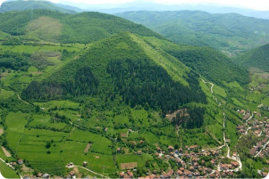

Bosnia in ruins, why?
Bosnia is today in ruins, and for cause, a terrible act caused by the Serbian army. Housing, fields, Muslim religious monuments, all these infrastructures have been destroyed, blown up, or shot by the serbs.

Why did the Serbs destroy the mosques?
During the Bosnian war, the final goal of the Bosnian Genocide caused by the Serbs was an "ethnic cleansing". "ethnic cleansing", indeed, the serbs being of orthodox religion, wanted to exterminate the Bosnian Muslims, and thus took advantage of killing thousands of humans, to also destroy the Muslim religious monuments!

What about Bosnia today ?
For several years now, Bosnia has been trying to heal the wounds of war caused by the Serbs. Between the corruption, and other... The country is struggling to develop, the Bosnians having moved abroad, help the country to develop, by rebuilding their houses, businesses, and other. Bosnia is now trying to enter the European Union, and it is not far from it, I hope that in a few years it will be the case, and that Bosnia will develop by then. Despite the negative aspects (corruption, etc..) Bosnia, thanks to its beautiful landscapes, becomes a tourist destination! The pyramids of the village of "Visoko" attract tourists from all over the world! And thus allow Bosnia to develop on the touristic aspect as well as economic.
